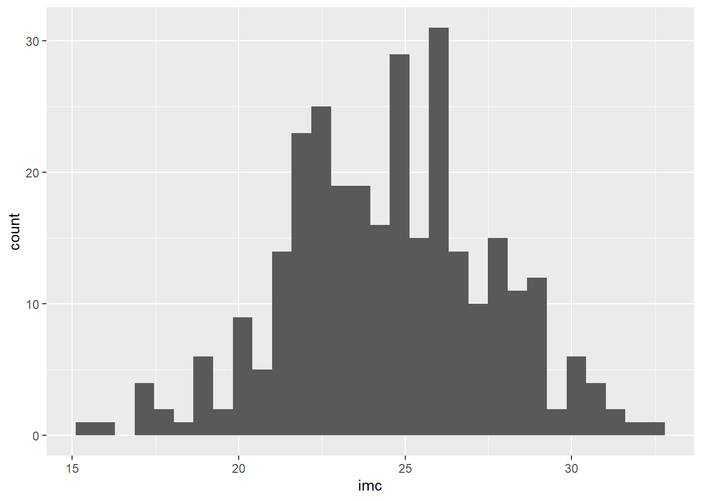
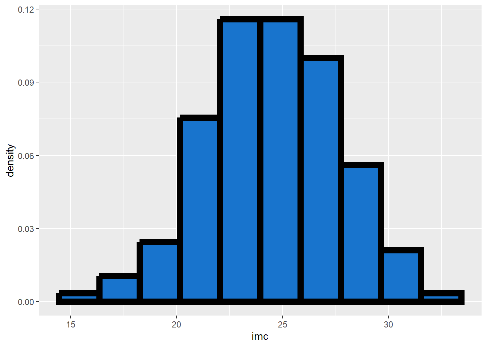
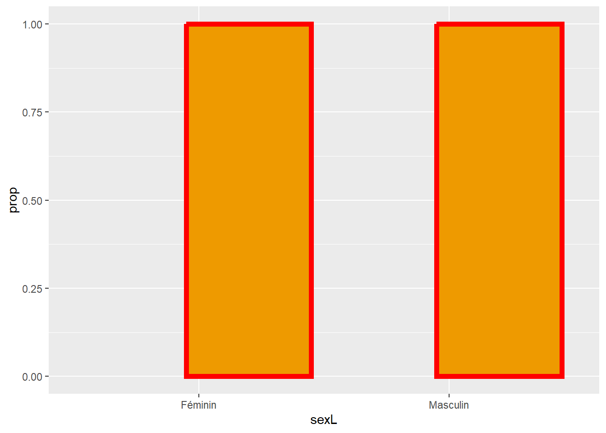
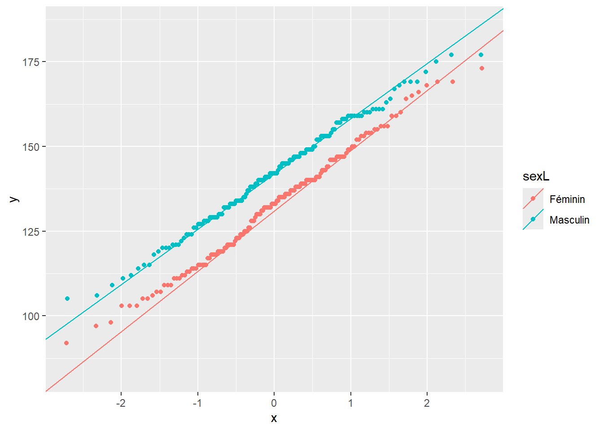

Chapter 5 Tidyverse
Le Tidyverse est une collection de packages qui apportent de nouvelles fonctions avec une nouvelle philosophie, une nouvelle grammaire et de nouvelles structures de données. IL est très utilisé dans la communauté des utilisateurs de R.
Nous allons reproduire les analyses R bases réalisées aux chapitres 3 et 4 avec les fonctions du Tidyverse.
Le livre R for data science donne une formation à R qui exploite largement les fonctions du Tidyverse.
5.1 Charger les packages du Tidyverse
Vous pouvez installer les packages du Tidyverse :
- dans R Studio, menu “Tools > Install packages”, tapez “tidyverse” dans le champ de recherche puis cliquez sur “Install”.
- dans la console, saisissez
install.packages("tidyverse")
R Studio va alors télécharger l’ensemble des packages de la collection.
Pour pouvoir utiliser les fonctions de ces packages, il faudra les charger avec library(tidyverse). Un message va s’afficher indiquant quels sont les packages qui viennent d’être chargés. Un avertissement indique également de possibles conflits entre fonctions de même nom : par exemple, filter() et lag() du package dplyr que vous venez de charger vont remplacer les fonctions de même nom du package stats de Rbase.
## ── Attaching core tidyverse packages ──────────────────────── tidyverse 2.0.0 ──
## ✔ dplyr 1.1.4 ✔ readr 2.1.5
## ✔ forcats 1.0.0 ✔ stringr 1.5.1
## ✔ ggplot2 3.5.2 ✔ tibble 3.3.0
## ✔ lubridate 1.9.4 ✔ tidyr 1.3.1
## ✔ purrr 1.0.4
## ── Conflicts ────────────────────────────────────────── tidyverse_conflicts() ──
## ✖ dplyr::filter() masks stats::filter()
## ✖ dplyr::lag() masks stats::lag()
## ✖ dplyr::sym() masks ggplot2::sym(), r2symbols::sym()
## ℹ Use the conflicted package (<http://conflicted.r-lib.org/>) to force all conflicts to become errors5.2 Pipe du tidyverse
Avant d’être implémenté dans R base, la syntaxe par “pipe” a d’abord été proposée par le package maggritr avec l’opérateur %>%. Il fonctionne de manière assez similaire au pipe natif de R, à quelques détails près.
Nous allons voir quelques exemples à partir de l’objet :
Comme pour le pipe natif, l’élément à gauche du pipe est transféré comme 1er argument dans la fonction à droite du pipe. La table suivante indique l’équivalence entre les 3 syntaxes. Notez que la fonction dans son expression la plus simple n’a pas besoin de parenthèses avec le pipe du Tidyverse
| R base | pipe natif | pipe du Tidyverse |
|---|---|---|
mean(x) |
x |> mean() |
x %>% mean |
quantile(x, c(0,0.5,1)) |
x |> quantile(c(0,0.5,1)) |
x %>% quantile(c(0,0.5,1)) |
round(mean(x)) |
x |> mean() |> round() |
x %>% mean %>% round |
Il est possible de transférer l’élément à gauche du pipe vers n’importe quel argument à droite du pipe à l’aide du “placeholder” .. La table ci-dessous indique l’équivalence entre les 3 syntaxes.
Si l’argument doit apparaître dans une expression nichée,
- il faut ajouter des accolades avec le pipe du Tidyverse.
- il faut enchaîner les fonctions avec le pipe natif (A vérifier : y a t’il d’autre solution ?)
| R base | pipe natif (placeholder = _) |
pipe du Tidyverse (placeholder = .) |
|---|---|---|
paste0(letters[1:10], x) |
x |> paste0(letters[1:10], a=_) |
x %>% paste0(letters[1:10], .) |
seq(1,100, along.with=x) |
x |> seq(1,100, along.with=_) |
x %>% seq(1,100, along.with=.) |
seq(1,100, by=length(x)) |
x |> length() |> seq(1,100, by=_) |
x %>% {seq(1,100, by=length(.))} |
5.3 Importer une base de données
Au sein du Tidyverse, les bases de données .csv peuvent être importées avec les commandes read_csv() et read_csv2() (analogues aux commandes Rbase read.csv() et read.csv2()). Les bases sont converties au format tibble (abbréviation “tbl”), grâce au package tibble.
Note : une base au format tibble est également de type data.frame, donc les commandes permettant de manipuler un data.frame fonctionneront de la même manière sur un tibble.
## Importer les bases df_1 et meta_df_1 au format tibble :
df_1 <- read_csv2("data/df_1.csv")
meta_df_1 <- read_csv2("data/meta_df_1.csv")
## Vérifiez quel est le format de df_1 :
class(df_1) # df_1 est de format "Tibble" (tbl) et de format "data.frame"## [1] "spec_tbl_df" "tbl_df" "tbl" "data.frame"Les différences entre une base de données au format tibble ou au format data.frame sont décrites dans la vignette sur les tibbles.
En résumé, à la différence des data.frames :
- tibble ne prend pas en compte les
rownames()
df_test <- data.frame(a = 10:15, b = letters[1:6])
rownames(df_test) <- c("janvier", "février", "mars", "avril", "mai", "juin")
rownames(df_test)
rownames(as_tibble(df_test)) # [1] "1" "2" "3" "4" "5" "6"- il est facile de créer des colonnes correspondant à des listes (un vecteur comportant des valeurs de types différents)
- il ne change pas les noms de colonnes que l’on souhaite écrire dans un format non-conventionnel
data.frame(`1 N (%)` = 1:3) # la commande data frame a changé le nom de la variable
tibble(`1 N (%)` = 1:3) # le nom de variable non-conventionnel est conservé- il recycle uniquement les vecteurs de longueur 1 pour éviter des erreurs
data.frame(id = 1:10,
var1 = 20:24, # ces valeurs sont recyclées avec data.frame
var2 = 30) # la valeur est recyclée avec data.frame
tibble(id = 1:10,
var1 = 20:24, # message d'erreur en cas valeurs de longueur > 1
var2 = 30)
tibble(id = 1:10,
var2 = 30) # mais tibble peut recycler des valeurs de longueur 1Par ailleurs, un sous-ensemble d’un tibble sélectionné par indexation est également un autre tibble. Comme pour les data.frames, on peut sélectionner une variable avec les doubles crochets [[]] ou l’opérateur dollar.
df_1[c(100:103), c(2,3)]
# on peut sélectionner une variable avec [[]] ou l'opérateur dollar
df_1[[4]]
df_1$traitVous pouvez vous référer au cheatsheet du package dplyr pour avoir un pense-bête des fonctions de manipulation de données associées au Tidyverse.
5.4 Inspecter les données
Contrairement au format data.frame, le format tibble n’imprime à l’écran que les 10 premières lignes et les colonnes qui peuvent être affichée dans un même écran. Le type de variable (double, caractère, facteur, …) apparaît en en-tête de colonne. Certaines informations particulières sont mises en valeurs par des couleurs (par exemple, les NA apparaîssent en couleur).
## # A tibble: 300 × 5
## subjid sex imc trait pas
## <dbl> <dbl> <dbl> <dbl> <dbl>
## 1 1 0 24.8 2 140
## 2 2 0 24.1 3 109
## 3 3 0 26.4 1 156
## 4 4 0 23.3 2 124
## 5 5 0 25.4 2 131
## 6 6 1 25 3 148
## 7 7 0 25.2 3 125
## 8 8 0 21.5 3 117
## 9 9 0 21.8 1 132
## 10 10 0 25.9 1 133
## # ℹ 290 more rowsOn peut afficher une version transposée de la base (les colonnes sont imprimées en lignes) avec la fonction glimpse(), un peu à la manière de la fonction str() de R base.
## Rows: 300
## Columns: 5
## $ subjid <dbl> 1, 2, 3, 4, 5, 6, 7, 8, 9, 10, 11, 12, 13, 14, 15, 16, 17, 18, …
## $ sex <dbl> 0, 0, 0, 0, 0, 1, 0, 0, 0, 0, 0, 1, 0, 1, 1, 1, 1, 0, 1, 0, 0, …
## $ imc <dbl> 24.8, 24.1, 26.4, 23.3, 25.4, 25.0, 25.2, 21.5, 21.8, 25.9, 22.…
## $ trait <dbl> 2, 3, 1, 2, 2, 3, 3, 3, 1, 1, 1, 2, 2, 2, 2, 1, 3, 3, 2, 3, 2, …
## $ pas <dbl> 140, 109, 156, 124, 131, 148, 125, 117, 132, 133, 134, 127, 139…La fonction arrange permet de trier les données selon une ou plusieurs variables
Pour sélectionner des lignes, on peut utiliser la fonction slice et autres fonctions associées (voir l’aide ?dplyr::slice):
## slice_head() et slice_tail() permettent de sélectionner les premières et
## dernières lignes.
## - l'argument "n" permet d'indiquer le nombre de lignes,
## - l'argument "prop" permet d'indiquer le pourcentage de lignes que l'on
## souhaite afficher
slice_head(df_1, n = 5) # voir les 5 premières lignes
df_1 %>% arrange(sex, imc) %>% slice_head(n = 6) # voir les 6 premières lignes
# après avoir trié les données selon le sexe et l'imc
## Attention avec l'écriture par pipe (l'ordre des commandes à une influence) +++
df_1 %>% slice_head(n = 6) %>% arrange(sex, imc) # ici, on a d'abord séléctionné
# les données (ce qui donne une base de type tibble de 6 lignes), et on a ensuite
# trié cette petite base de 6 lignes selon le sexe et l'imc
df_1 %>% slice_tail(prop = 0.01) # voir 1% des dernières lignes (càd 3 lignes)
## slice_sample() sélectionne des lignes au hasard
df_1 %>% slice_sample(n = 6)
## slice() permet de sélectionner des lignes spécifiques (4è, 10è et 15è ligne)
df_1 %>% slice(4, 10, 15)
## cette commande est équivalente à l'écriture avec indexation par position
df_1[c(4,10,15), ]La fonction filter() permet de sélectionner des lignes à l’aide d’une condition (voir l’aide ?dplyr::filter).
df_1 %>% filter(sex == 0 & imc < 21)
## Indiquer plusieurs conditions séparées par une virgule est équivalent à des
## conditions séparées par ET (condition1 & condition2)
df_1 %>% filter(sex == 0, imc < 21)
# est équivalent à la sélection par condition entre crochets de R base
df_1[df_1$sex == 0 & df_1$imc < 21, ]La fonction select() permet de sélectionner des colonnes (des variables). Un certains nombre de fonctions peuvent être utilisées au sein de la fonction select pour faciliter le travail de sélection.
df_1 %>% select(c(sex, trait)) # sélectionne les colonnes sexe et trait
df_1 %>% select(sex, trait) # équivalent à la syntaxe précédente : pas besoin de c()
# c'est équivalent à une sélection entre crochets par indexation sur le nom
df_1[,c("sex", "trait")]
df_1 %>% select(subjid:imc) # sélectionne les colonnes allant de sexe à imc
df_1 %>% select(!sex) # ensemble complémentaire de la variable sexe
df_1 %>% select(-sex, -imc) # toutes les variables sauf sex et imc
df_1 %>% select(last_col()) # sélectionne la dernière colonne
df_1 %>% select(starts_with("pa")) # les variables dont le nom commence par "pa"
df_1 %>% select(ends_with("as")) # les variables dont le nom termine par "as"
df_1 %>% select(contains("bj")) # les variables dont le nom contient "bj"
# on peut également combiner plusieurs modes de sélection :
df_1 %>% select(subjid, starts_with("im"), last_col())
# etc, voir l'aide
?select()
## select() permet également de renommer directement les variables sélectionnées
df_1 %>% select(Sexe = sex, Traitement = trait)
## select() permet de changer l'ordre des variables
select(df_1,
imc, trait, subjid, # commence avec ces 3 variables dans cet ordre
everything()) # everything() sélection toutes les autres variablesL’indexation d’une seule variable :
- par simple crochet
[]permet de sélectionner la variable et de la retourner au format tibble. La fonctionselect()du packagedplyrappliquée à une seule variable donne un résultat équivalent. - par double crochet
[[]]ou avec l’opérateur dollar$permet de sélectionner la variable et de la retourner au format de vecteur. La fonctionpulldu packagedplyrappliquée à une seule variable donne un résultat équivalent.
Cela peut avoir son importance car certaines fonction s’appliquent à des tibbles, et d’autres à des vecteurs.
## Sélection par simples crochets et retour sous format tibble
df_1[3]
class(df_1[3]) # c'est une base de données (tibble ou data.frame)
## équivalent en dplyr
select(df_1, imc)
class(select(df_1, imc)) # une colonne de base de données (tibble ou data.frame)
### pour sélectionner une variable et la retourner comme un vecteur :
df_1$imc # retourne le vecteur imc (équivalent à df_1[["imc"]])
df_1[[3]]
df_1[["imc"]]
class(df_1$imc) # c'est un vecteur numérique
typeof(df_1$imc) # un vecteur de réels (double) pour être plus précis
# équivalent en dplyr
pull(df_1, imc)
class(pull(df_1, imc)) # c'est un vecteur numérique
typeof(pull(df_1, imc)) # un vecteur de réels (double) pour être plus précis5.5 Créer ou modifier une variable
5.5.1 Créer des variables
Pour créer des variables au sein des tibbles, on utilise les fonctions :
mutate()permet de créer des nouvelles variablesif_else()fonctionne selon le même principe que la fonctionifelse()de Rbase (notez la différence d’écriture) à quelques différences prêt :
## La fonction if_else() de dplyr s'assure que le résultat est du même "type"
ifelse(1:10 < 5, "<5", 0)
# ifelse retourne un vecteur caractère (le 0 est transformé en "0" par coercition)
if_else(1:10 < 5, "<5", 0) # dans la même situation, if_else retourne une erreur
## La fonction if_else() de dplyr permet de préciser un argument missing pour
## indiquer comment considérer les manquants
ifelse(c(1,2,NA,4,5) <= 3, 1, 0) # retourne NA pour la valeur manquante
if_else(c(1,2,NA,4,5) <= 3, 1, 0, missing = NULL)
# ici, la fonction if_else retourne NA pour la valeur manquante
if_else(c(1,2,NA,4,5) <= 3, 1, 0, missing = 9)
# ici, la fonction if_else indique le code choisi (= 9) au lieu de NAcase_whenfonctionne selon le même principe que la fonctionif_elsemais pour créer des variables à plus de 2 catégories. Voir l’aide?case_when.
### créer la variable obésité.
# note avec le pipe, pensez à assigner le résultat dans df_1 pour que la
# variable crée soit bien sauvegardée dans la base df_1
# (ci-dessous, la variable est uniquement crée de manière temporaire)
df_1 %>%
mutate(obesite = if_else(df_1$imc >= 30, 1, 0)) ## # A tibble: 300 × 6
## subjid sex imc trait pas obesite
## <dbl> <dbl> <dbl> <dbl> <dbl> <dbl>
## 1 1 0 24.8 2 140 0
## 2 2 0 24.1 3 109 0
## 3 3 0 26.4 1 156 0
## 4 4 0 23.3 2 124 0
## 5 5 0 25.4 2 131 0
## 6 6 1 25 3 148 0
## 7 7 0 25.2 3 125 0
## 8 8 0 21.5 3 117 0
## 9 9 0 21.8 1 132 0
## 10 10 0 25.9 1 133 0
## # ℹ 290 more rows## # A tibble: 3 × 5
## subjid sex imc trait pas
## <dbl> <dbl> <dbl> <dbl> <dbl>
## 1 1 0 24.8 2 140
## 2 2 0 24.1 3 109
## 3 3 0 26.4 1 156df_1 <- df_1 %>%
mutate(obesite = if_else(df_1$imc >= 30, 1, 0))
df_1 %>% slice_head(n = 3) # ici, la variable a bien été ajoutée dans df_1## # A tibble: 3 × 6
## subjid sex imc trait pas obesite
## <dbl> <dbl> <dbl> <dbl> <dbl> <dbl>
## 1 1 0 24.8 2 140 0
## 2 2 0 24.1 3 109 0
## 3 3 0 26.4 1 156 0### Vérifier que la variable est crée correctement en calculant le min et le max
### dans chaque groupe d'obésité nouvellement créé :
# on va utiliser la fonction summarise qui permet de calculer différents paramètres
# d'une distribution de variables, voir ?summarise()
# ces analyses peuvent se faire par sous-groupes, qui sont identifiés en amont
# par la fonction group_by()
### La fonction summarise sera revue plus en détails pour l'analyse descriptive
# Note : summarise()/summarize() peut s'écrire avec un "s" ou un "z"
df_1 %>%
group_by(obesite) %>% # prépare à une analyse par groupe
summarise(min = min(imc), # calcul le min et max selon les groupes définis
max = max(imc)) # par la fonction "group_by()"## # A tibble: 2 × 3
## obesite min max
## <dbl> <dbl> <dbl>
## 1 0 15.4 29.9
## 2 1 30.1 32.5### Créer la variable imc à 4 classe, avec la fonction case_when()
### qui fonctionne selon le principe de if_else, mais pour plus de 2 catégories :
### Chaque catégorie va être définie par une formule avec :
### la condition à gauche du signe ~ et la valeur à assigner à droite du signe ~
df_1 <- df_1 %>%
mutate(imc_cl = case_when(imc < 18.5 ~ 1,
imc >= 18.5 & imc < 25 ~ 2,
imc >= 25 & imc < 30 ~ 3,
imc >= 30 ~ 4))
df_1 %>% slice_head(n = 3) # la variable imc_cl a été ajoutée à la base df_1## # A tibble: 3 × 7
## subjid sex imc trait pas obesite imc_cl
## <dbl> <dbl> <dbl> <dbl> <dbl> <dbl> <dbl>
## 1 1 0 24.8 2 140 0 2
## 2 2 0 24.1 3 109 0 2
## 3 3 0 26.4 1 156 0 3### vérifier que la variable a été correctement créée
df_1 %>%
group_by(imc_cl) %>%
summarise(min = min(imc),
max = max(imc))## # A tibble: 4 × 3
## imc_cl min max
## <dbl> <dbl> <dbl>
## 1 1 15.4 18.4
## 2 2 18.7 24.9
## 3 3 25 29.9
## 4 4 30.1 32.5### le croisement entre imc en classe et obésité doit être cohérent :
with(df_1, table(as.factor(imc_cl), as.factor(obesite), deparse.level = 2))## as.factor(obesite)
## as.factor(imc_cl) 0 1
## 1 9 0
## 2 159 0
## 3 119 0
## 4 0 13## # A tibble: 4 × 3
## # Groups: imc_cl [4]
## imc_cl obesite n
## <dbl> <dbl> <int>
## 1 1 0 9
## 2 2 0 159
## 3 3 0 119
## 4 4 1 13## # A tibble: 4 × 3
## imc_cl obesite n
## <dbl> <dbl> <int>
## 1 1 0 9
## 2 2 0 159
## 3 3 0 119
## 4 4 1 135.5.2 Renommer une variable, changer sa position
Les fonctions :
rename()permet de renommer une variable (sans changer sa position)relocate()permet de changer l’ordre des colonnes.
## Après les modifications suivantes, on inspectera les 3 premières lignes :
## - Renommer une variable sans changer sa position
df_1 %>%
rename(imc_en_classe = imc_cl) %>%
slice_head(n = 3)## # A tibble: 3 × 7
## subjid sex imc trait pas obesite imc_en_classe
## <dbl> <dbl> <dbl> <dbl> <dbl> <dbl> <dbl>
## 1 1 0 24.8 2 140 0 2
## 2 2 0 24.1 3 109 0 2
## 3 3 0 26.4 1 156 0 3## - Changer l'ordre des colonnes, par exemple, déplacer les colonnes
## imc_cl et obesité (dans cet ordre) après la variable imc
df_1 %>%
relocate(imc_cl, obesite, .after = imc) %>%
slice_head(n = 3)## # A tibble: 3 × 7
## subjid sex imc imc_cl obesite trait pas
## <dbl> <dbl> <dbl> <dbl> <dbl> <dbl> <dbl>
## 1 1 0 24.8 2 0 2 140
## 2 2 0 24.1 2 0 3 109
## 3 3 0 26.4 3 0 1 1565.5.3 Ajouter des lignes
La fonction add_row() permet d’ajouter des lignes à l’endroit de notre choix.
## # A tibble: 8 × 5
## var label id_labs code_labs labs
## <chr> <chr> <dbl> <dbl> <chr>
## 1 subjid Identifiant patient 1 NA <NA>
## 2 sex Sexe 1 0 Féminin
## 3 sex Sexe 2 1 Masculin
## 4 imc IMC (kg/m²) 1 NA <NA>
## 5 trait Traitement 1 1 Placebo
## 6 trait Traitement 2 2 Traitement A
## 7 trait Traitement 3 3 Traitement B
## 8 pas PAS (mmHg) 1 NA <NA>## On commence par rajouter les labels de la variable imc_cl
# Note : pensez à assigner la commande à la base meta_df_1 pour enregistrer les
# modifications sinon, la création ne sera que temporaire
meta_df_1 <- meta_df_1 %>% add_row(var = rep("imc_cl", 4),
label = rep("IMC en classes", 4),
id_labs = 1:4,
code_labs = 1:4,
labs = c("Maigreur", "Normal", "Surpoids", "Obèse"))
meta_df_1 %>% slice_tail(n = 6)## # A tibble: 6 × 5
## var label id_labs code_labs labs
## <chr> <chr> <dbl> <dbl> <chr>
## 1 trait Traitement 3 3 Traitement B
## 2 pas PAS (mmHg) 1 NA <NA>
## 3 imc_cl IMC en classes 1 1 Maigreur
## 4 imc_cl IMC en classes 2 2 Normal
## 5 imc_cl IMC en classes 3 3 Surpoids
## 6 imc_cl IMC en classes 4 4 Obèse## Puis, on ajoute les labels de la variable obesite
## mais en les positionnant juste avant les labels de imc_cl
meta_df_1 <- meta_df_1 %>% add_row(var = rep("obesite", 2),
label = rep("Obésité", 2),
id_labs = c(1,2),
code_labs = c(0,1),
labs = c("Non", "Oui"),
.before = 9) # avant la 9ème ligne
meta_df_1 %>% slice_tail(n = 7)## # A tibble: 7 × 5
## var label id_labs code_labs labs
## <chr> <chr> <dbl> <dbl> <chr>
## 1 pas PAS (mmHg) 1 NA <NA>
## 2 obesite Obésité 1 0 Non
## 3 obesite Obésité 2 1 Oui
## 4 imc_cl IMC en classes 1 1 Maigreur
## 5 imc_cl IMC en classes 2 2 Normal
## 6 imc_cl IMC en classes 3 3 Surpoids
## 7 imc_cl IMC en classes 4 4 Obèse5.5.4 Modifier des variables déjà existantes
Il est possible de modifier des variables déjà existantes :
- les fonctions
mutate()etif_else()que l’on a vu précédemment peuvent être utilisée. Ci-dessous, on modifie la valeur de PAS du patient n°137 et on ne modifie pas les valeurs des autres patients. - la fonction
rows_update()peut également être utilisée en indiquant un sous-ensemble de la base qui doit être mis à jour.
## # A tibble: 6 × 7
## subjid sex imc trait pas obesite imc_cl
## <dbl> <dbl> <dbl> <dbl> <dbl> <dbl> <dbl>
## 1 135 0 28 2 154 0 3
## 2 136 1 26.2 1 138 0 3
## 3 137 0 20.1 1 133 0 2
## 4 138 0 24.7 3 155 0 2
## 5 139 0 17 2 115 0 1
## 6 140 1 25.7 1 160 0 3# Modifier la valeur de PAS du patient n°137 de 133 mmHg à 123 mmHg
# => change la valeur à 123 si subjid == 137, sinon garde la valeur pas originale
df_1 <- df_1 %>% mutate(pas = if_else(subjid == 137, 123, pas))
## Vérifier que la modification est bien enregistrée :
df_1 %>% filter(subjid %in% 135:140)## # A tibble: 6 × 7
## subjid sex imc trait pas obesite imc_cl
## <dbl> <dbl> <dbl> <dbl> <dbl> <dbl> <dbl>
## 1 135 0 28 2 154 0 3
## 2 136 1 26.2 1 138 0 3
## 3 137 0 20.1 1 123 0 2
## 4 138 0 24.7 3 155 0 2
## 5 139 0 17 2 115 0 1
## 6 140 1 25.7 1 160 0 3## Autre possibilité avec la fonction rows_update() où indique un sous-ensemble
## de la base qui doit être mise à jour
# Note : dans l'exemple ci-dessous, on fait une transformation temporaire
df_1 %>% # pas d'assignation (pour une transformation temporaire)
rows_update(tibble(subjid = 137, pas = 133)) %>% # revient à la valeur de 133
filter(subjid %in% 135:140) # visualiser les lignes subjid = 135 à 140## Matching, by = "subjid"## # A tibble: 6 × 7
## subjid sex imc trait pas obesite imc_cl
## <dbl> <dbl> <dbl> <dbl> <dbl> <dbl> <dbl>
## 1 135 0 28 2 154 0 3
## 2 136 1 26.2 1 138 0 3
## 3 137 0 20.1 1 133 0 2
## 4 138 0 24.7 3 155 0 2
## 5 139 0 17 2 115 0 1
## 6 140 1 25.7 1 160 0 35.6 Analyses univariées
5.6.1 Création de variables de type “factor”
Afin de faire une analyse descriptive ou graphique des variables qualitatives, il est utile de les convertir en vecteurs de type “factor”.
Pour cela, on peut se servir de la fonction factor() au sein de la fonction mutate() que nous avons déjà utilisée pour créer de nouvelles variables de type “factor.”
df_1 <- df_1 %>%
mutate(sexL = factor(sex,
labels = meta_df_1$labs[meta_df_1$var == "sex"]),
traitL = factor(trait))
df_1 %>% slice_head(n = 5) # sexL et traitL ont été ajoutées à df_1## # A tibble: 5 × 9
## subjid sex imc trait pas obesite imc_cl sexL traitL
## <dbl> <dbl> <dbl> <dbl> <dbl> <dbl> <dbl> <fct> <fct>
## 1 1 0 24.8 2 140 0 2 Féminin 2
## 2 2 0 24.1 3 109 0 2 Féminin 3
## 3 3 0 26.4 1 156 0 3 Féminin 1
## 4 4 0 23.3 2 124 0 2 Féminin 2
## 5 5 0 25.4 2 131 0 3 Féminin 2Le package forcatsdu tidyverse apporte de nombreuses fonctions pour manipuler les variables de type “factor”. Toutes ces fonctions commencent par ftc_... (pour “factor”). Voir le cheatsheet de forcats ou encore sa vignette.
Par exemple, la fonction fct_recode() permet de recoder des facteurs. Pour chaque catégorie à recoder, on indiquer le “nouveau nom” suivi de égal, puis “l’ancien nom”.
## Utilisons la fonction fct_recode() pour recoder les levels de la variable traitL,
df_1$traitL <- fct_recode(df_1$traitL,
Placebo = "1", # nouveau label = "ancien label"
"Traitement A" = "2",
"Traitement B" = "3")
# s'il y a des caractètres spéciaux (comme des espaces, le nouveau nom doit être
# entre guillements)## Notez que la commande avec le pipe ci-dessous
## ne fonctionne pas car le premier argument de fct_recode doit être un facteur.
## Cette écriture avec le pipe extrait la colonne au format "tibble"
## (pas au format "factor")
df_1 %>% fct_recode(traitL,
Placebo = "1", # nouveau label = "ancien label"
"Traitement A" = "2",
"Traitement B" = "3") 5.6.2 Description de variables quantitatives
La fonction summarise() permet de décrire différents paramètres avec les fonctions suivantes à indiquer au sein de la fonction (voir l’aide ?summarize()) :
- moyenne et écart type avec
mean()etsd() - min, max, médiane et intervalles interquartiles :
min(),max(),median(),IQR(),quantile() - comptes avec
n()etn_distinct()
Les fonctions connexes summarise_at(), summarise_all(), … permettent de décrire plusieurs variables en même temps. A chaque analyse, une nouvelle table est crée (sous format tibble) avec une colonne par paramètre calculé.
## Par exemple, nous pouvons décrire les paramètres de la distribution de l'IMC
df_1 %>% summarise(n = sum(!is.na(imc)), # nombre de non-manquants
mean = mean(imc),
sd = sd(imc),
min = min(imc),
p25 = quantile(imc, probs = 0.25),
med = median(imc),
p75 = quantile(imc, probs = 0.75),
max = max(imc))## # A tibble: 1 × 8
## n mean sd min p25 med p75 max
## <int> <dbl> <dbl> <dbl> <dbl> <dbl> <dbl> <dbl>
## 1 300 24.5 3.07 15.4 22.3 24.6 26.4 32.5## Moyenne et écart type des deux variables quantitatives
df_1 %>% summarise_at(c("imc", "pas"),
list(mean = mean,
sd = sd),
na.rm = TRUE) # argument des fonctions mean et sd## # A tibble: 1 × 4
## imc_mean pas_mean imc_sd pas_sd
## <dbl> <dbl> <dbl> <dbl>
## 1 24.5 137. 3.07 16.8Comme la fonction summarise_at() crée une nouvelle colonne par paramètre, ce n’est pas très pratique si on veut décrire de nombreux paramètres pour plusieurs variables.
Une autre solution est de créer une ligne contenant tous les paramètres, pour chaque variable. Puis de fusionner l’ensemble des lignes ainsi créées dans une nouvelle table.
Au sein du package dplyr du Tidyverse, les fonctions bind_rows() et bind_cols() sont analogues aux fonctions Rbases rbind() et cbind() (qui permettent de fusionner des vecteurs ou des matrices ou des “data.frame” par rang ou par colonnes).
## On créé une 1ère ligne pour l'IMC, stockée dans l'objet "row_imc"
row_imc <- df_1 %>%
summarise(n = sum(!is.na(imc)), # créé une ligne avec les paramètres
mean = mean(imc, na.rm = TRUE),
sd = sd(imc, na.rm = TRUE),
min = min(imc, na.rm = TRUE),
p25 = quantile(imc, probs = 0.25, na.rm = TRUE),
med = median(imc, na.rm = TRUE),
p75 = quantile(imc, probs = 0.75, na.rm = TRUE),
max = max(imc, na.rm = TRUE)) %>%
mutate(var = "IMC (kg/m2)") %>% # ajoute une colonne avec le nom de variable
relocate(var, .before = n) # déplace le nom de variable en 1ère colonne
## On créé une 2ème ligne pour la PAS, stockée dans l'objet "row_pas
row_pas <- df_1 %>%
summarise(n = sum(!is.na(pas)), # créé une ligne avec les paramètres
mean = mean(pas, na.rm = TRUE),
sd = sd(pas, na.rm = TRUE),
min = min(pas, na.rm = TRUE),
p25 = quantile(pas, probs = 0.25, na.rm = TRUE),
med = median(pas, na.rm = TRUE),
p75 = quantile(pas, probs = 0.75, na.rm = TRUE),
max = max(pas, na.rm = TRUE)) %>%
mutate(var = "PAS (mmHg)") %>% # ajoute une colonne avec le nom de variable
relocate(var, .before = n) # déplace le nom de variable en 1ère colonne
## on fusionne le deux lignes avec la fonction bind_rows()
bind_rows(row_imc, row_pas)## # A tibble: 2 × 9
## var n mean sd min p25 med p75 max
## <chr> <int> <dbl> <dbl> <dbl> <dbl> <dbl> <dbl> <dbl>
## 1 IMC (kg/m2) 300 24.5 3.07 15.4 22.3 24.6 26.4 32.5
## 2 PAS (mmHg) 300 137. 16.8 92 125 138 149 1775.6.3 Description de variables qualitatives
Pour décrire les variables qualitatives, on peut utiliser les fonctions table() et prop.table() de Rbase.
Au sein du Tidyverse, la fonction fct_count() du package forcats permet de décrire les variables de type “factor” avec deux arguments intéressants :
sort = TRUEpermet de présenter les modalités de réponses de la plus fréquente à la moins fréquenteprop = TRUEajoute les pourcentages au dénombrement .
##
## Placebo Traitement A Traitement B
## 120 91 89##
## Placebo Traitement A Traitement B
## 0.4000000 0.3033333 0.2966667## # A tibble: 3 × 2
## f n
## <fct> <int>
## 1 Placebo 120
## 2 Traitement A 91
## 3 Traitement B 89fct_count(df_1$traitL,
sort = TRUE, # trie les modalités de réponses du + au - fréquent
prop = TRUE) # ajoute les proportions## # A tibble: 3 × 3
## f n p
## <fct> <int> <dbl>
## 1 Placebo 120 0.4
## 2 Traitement A 91 0.303
## 3 Traitement B 89 0.297## Comme précédemment, on peut combiner dans une seule table la description des
## variables sexe et traitement avec la fonction bind_row()
# Note : ci-dessous, on ajoute une ligne contenant uniquement le nom de variable,
# récupéré dans la base de méta-données,
# puis on renomme les colonnes f et p
bind_rows(tibble(f = meta_df_1$label[meta_df_1$var == "sex"][1]),
fct_count(df_1$sexL, sort = TRUE, prop = TRUE),
tibble(f = meta_df_1$label[meta_df_1$var == "trait"][1]),
fct_count(df_1$traitL, sort = TRUE, prop = TRUE)) %>%
rename("Variable" = f,
"%" = p)## # A tibble: 7 × 3
## Variable n `%`
## <chr> <int> <dbl>
## 1 Sexe NA NA
## 2 Féminin 153 0.51
## 3 Masculin 147 0.49
## 4 Traitement NA NA
## 5 Placebo 120 0.4
## 6 Traitement A 91 0.303
## 7 Traitement B 89 0.2975.7 Représentations graphiques
5.7.1 Distributions univariées
Le Tidyverse utilise le package ggplot2 pour réaliser des graphiques. Pour vous aider à utiliser ce package, vous pouvez consulter :
- le cheatsheet de ggplot2
- le livre R for data science qui donne de nombreux exemples de représentations graphiques avec
ggplot2 - le livre ggplot2
- et bien sûr l’aide en ligne.
Les figures sont composées de calques successifs. On commence par indiquer une première ligne ggplot(data, mapping = aes(x = ...) avec comme argument :
- les données,
- les variables à utiliser (“aesthetics”).
Puis, on peut ajouter des calques successifs avec des + avant chaque calque :
- des histogrammes avec la fonction
geom_hist() - des densités de kernel avec la fonction
geom_density() - des box-plots avec la fonction
geom_boxplot() - des diagrammes en barres (pour les variables discrètes comme les facteurs), avec la fonction
geom_bar() - modifier les titres et labels avec la fonction
labs() - modifier le contenu des légendes avec les fonctions
scale_colour_discrete()pour légender les couleurs ou encorescale_shape_discretepour légender les couleurs - modifier le thème général de présentation avec la fonction
theme() - etc.
## Variables quantitatives
## 1) représenter la distribution de l'IMC à l'aide d'un histogramme
ggplot(data = df_1, mapping = aes(x = imc)) +
geom_histogram()## `stat_bin()` using `bins = 30`. Pick better value with `binwidth`.
## démarrage du serveur d'aide httpd ... finiggplot(data = df_1, mapping = aes(x = imc)) +
geom_histogram(bins = 10, # nombre de "rectangles" default = 30
colour = "black", # couleur du contour
linewidth = 3, # épaisseur de ligne
fill = "dodgerblue3")
## 2) La distribution de l'IMC par une densité de kernel
ggplot(data = df_1, mapping = aes(x = imc)) +
geom_density()# pour voir les options possibles de les densités de kernel :
?geom_density
ggplot(data = df_1, mapping = aes(x = imc)) +
geom_density(bw = "nrd", n = 100, # bandwidth selector
kernel = "rectangular") # kernel functionggplot(data = df_1, mapping = aes(x = imc)) +
geom_density(bw = "nrd0", # default bandwidth selector
kernel = "gaussian", # default kernel function
colour = "red", # couleur du contour
linewidth = 2, # épaisseur de ligne
linetype = 4) # type de ligne (dotdash)# type de lignes :
# 0 = blank, 1 = solid, 2 = dashed, 3 = dotted, 4 = dotdash, 5 = longdash,
# 6 = twodash
## 3) La distribution de l'IMC par un boxplot
ggplot(data = df_1, mapping = aes(x = imc)) +
geom_boxplot()# pour voir les options possibles des boxplots :
?geom_boxplot
ggplot(data = df_1, mapping = aes(x = imc)) +
geom_boxplot(outliers = TRUE, # afficher les outliers
outlier.colour = "blue",
outlier.fill = "green",
outlier.shape = 7, # symbole des outliers voir ?shape
outlier.size = 5, # taille des outliers
outlier.stroke = 0.1, # épaisseur de trait des outliers
outlier.alpha = NULL, # transparence des outliers
staplewidth = 0.1) # largeur de la moustache## Variables qualitatives
## Représenter la distribution du sexe par un diagramme en barres
ggplot(data = df_1, mapping = aes(x = sexL)) +
geom_bar()# pour voir les options possibles de les diagrammes en barres :
?geom_bar
# sur l'axe des Y plutôt que des X
ggplot(data = df_1, mapping = aes(y = sexL)) + # ici y = sexL
geom_bar()# options
ggplot(data = df_1, mapping = aes(x = sexL)) +
geom_bar(mapping = aes(y = after_stat(prop)), # pour des % plutôt que des N
just = 0.1, # emplacement : 0=à gauche, 1=à droite, 0.5=centré
width = 0.5, # largeur de bande (0.9 par défaut)
colour = "red", # couleur de ligne
linewidth = 2, # largeur de ligne
fill = "orange2") # couleur de remplissage
5.7.2 Distributions bivariées
Pour représenter graphiquement des distributions bi- ou multivariées, on peut combiner plusieurs “aesthetics” dans la fonction ggplot(), pour associer une variable à une représentation graphique :
- sur l’axe des abcisses
xou l’axe des ordonnéesy - type de ligne avec
linetype - symbole
shape - couleur de lignes ou de symboles avec
color(oucolour) - remplissage de surfaces avec
fill
### Boxplot de la PAS en fonction du sexe
ggplot(data = df_1, mapping = aes(x = sexL, y = pas)) +
geom_boxplot(outliers = TRUE, staplewidth = 0.2) +
labs(x = "Sexe", y = "PAS (mmHg)",
title = "PAS en fonction du sexe",
subtitle = "vous pouvez ajouter un sous-titre")### Boxplot de la PAS en fonction du traitement
ggplot(data = df_1, mapping = aes(x = traitL, y = pas)) +
geom_boxplot(outliers = TRUE, staplewidth = 0.2) +
labs(x = "Traitement", y = "PAS (mmHg)",
title = "PAS en fonction du traitement")### Répartition du sexe par traitement
ggplot(data = df_1, mapping = aes(x = traitL, fill = sexL)) +
geom_bar(position = "stack") + # empilé
labs(x = "Traitement", title = "Sexe et traitement")
ggplot(data = df_1, mapping = aes(x = traitL, fill = sexL)) +
geom_bar(position = "dodge") + # côte à côte
labs(x = "Traitement", title = "Sexe et traitement")### On peut représenter un nuage de points de la PAS en fonction de l'IMC :
### où les hommes et les femmes ont deux symboles différents et les traitements
### trois couleurs différentes
ggplot(data = df_1, mapping = aes(y = pas,
x = imc,
shape = sexL,
color = traitL)) +
geom_point() # avec plus d'options
ggplot(data = df_1, mapping = aes(y = pas, x = imc, shape = sexL,
color = traitL)) +
geom_point(size = 2) + # taille des symboles
labs(x = "IMC (kg/m²)", y = "PAS (mmHg)", # titre et axes
title = "PAS en fonction de l'IMC") +
scale_colour_discrete(name = "Traitement", # 1ère légende liée aux couleurs
breaks = c("Placebo", "Traitement A", "Traitement B"),
labels = c("Placebo", "Traitement", "Traitement B")) +
scale_shape_discrete(name = "Sex", # 2ème légende liée aux symboles
breaks = c("Féminin", "Masculin"),
labels = c("Féminin", "Masculin")) +
theme(axis.text = element_text(size = 12)) # taille des valeurs sur les axes5.8 Analyses bivariées
5.8.1 Variable quantitative \(\times\) qualitative
Le package dplyr permet décrire une variable quantitative en fonction d’une variable qualitative, avec la fonction group_by().
Par exemple, la fonction summarise() créé les indicateurs statistiques par sous-groupe lorsque qu’elle est utilisée après la commande group_by().
## # A tibble: 300 × 9
## # Groups: sexL [2]
## subjid sex imc trait pas obesite imc_cl sexL traitL
## <dbl> <dbl> <dbl> <dbl> <dbl> <dbl> <dbl> <fct> <fct>
## 1 1 0 24.8 2 140 0 2 Féminin Traitement A
## 2 2 0 24.1 3 109 0 2 Féminin Traitement B
## 3 3 0 26.4 1 156 0 3 Féminin Placebo
## 4 4 0 23.3 2 124 0 2 Féminin Traitement A
## 5 5 0 25.4 2 131 0 3 Féminin Traitement A
## 6 6 1 25 3 148 0 3 Masculin Traitement B
## 7 7 0 25.2 3 125 0 3 Féminin Traitement B
## 8 8 0 21.5 3 117 0 2 Féminin Traitement B
## 9 9 0 21.8 1 132 0 2 Féminin Placebo
## 10 10 0 25.9 1 133 0 3 Féminin Placebo
## # ℹ 290 more rows# Notez qu'en description, le tibble indique qu'il considère la variable sexL
# comme une variable de groupe => cela est pris en compte pour les analyses qui
# suivront dans le pipe.
# Si vous avez sauvegardé une base tibble avec une propriété de sous-groupe,
# vous pouvez la supprimer avec la fonction ungroup()
df_1 %>%
group_by(sexL) %>%
ungroup()## # A tibble: 300 × 9
## subjid sex imc trait pas obesite imc_cl sexL traitL
## <dbl> <dbl> <dbl> <dbl> <dbl> <dbl> <dbl> <fct> <fct>
## 1 1 0 24.8 2 140 0 2 Féminin Traitement A
## 2 2 0 24.1 3 109 0 2 Féminin Traitement B
## 3 3 0 26.4 1 156 0 3 Féminin Placebo
## 4 4 0 23.3 2 124 0 2 Féminin Traitement A
## 5 5 0 25.4 2 131 0 3 Féminin Traitement A
## 6 6 1 25 3 148 0 3 Masculin Traitement B
## 7 7 0 25.2 3 125 0 3 Féminin Traitement B
## 8 8 0 21.5 3 117 0 2 Féminin Traitement B
## 9 9 0 21.8 1 132 0 2 Féminin Placebo
## 10 10 0 25.9 1 133 0 3 Féminin Placebo
## # ℹ 290 more rows## Description de l'IMC en fonction du sexe
df_1 %>%
group_by(sexL) %>%
summarise(n = sum(!is.na(imc)), # nombre de non-manquants
mean = mean(imc),
sd = sd(imc))## # A tibble: 2 × 4
## sexL n mean sd
## <fct> <int> <dbl> <dbl>
## 1 Féminin 153 24.1 3.09
## 2 Masculin 147 24.9 3.00## Description de la PAS en fonction du traitement
df_1 %>%
group_by(traitL) %>%
summarise(n = sum(!is.na(pas)), # nombre de non-manquants
mean = mean(pas),
sd = sd(pas))## # A tibble: 3 × 4
## traitL n mean sd
## <fct> <int> <dbl> <dbl>
## 1 Placebo 120 141. 15.6
## 2 Traitement A 91 131. 16.4
## 3 Traitement B 89 138. 17.05.8.2 Variable qualitative \(\times\) qualitative
De la même manière, on peut décrire les effectifs et pourcentages de la variable sexL (en lignes), en fonction de la variable traitement (en colonnes) avec la fonction summarise() après une fonctiongroup_by().
# Dans l'exemple ci-dessous, pour décrire une variable catégorielle par groupe,
# on décrit le résultat d'un test de condition, le calcule des paramètres sum()
# et mean() va transformer par coercition la variable vrai/faux en variable
# binaire 1/0 avant de faire le calcul
# (pour rappel, un pourcentage est une moyenne de 0 et de 1).
df_1 %>%
group_by(sexL) %>%
summarise("Placebo, n" = sum(trait == 1), # effectif
"Placebo, %" = mean(trait == 1) * 100, # % en ligne (selon le sex)
"Traitement A, n" = sum(trait == 2),
"Traitement A, %" = mean(trait == 2) * 100,
"Traitement B, n" = sum(trait == 3),
"Traitement B, %" = mean(trait == 3) * 100)## # A tibble: 2 × 7
## sexL `Placebo, n` `Placebo, %` `Traitement A, n` `Traitement A, %`
## <fct> <int> <dbl> <int> <dbl>
## 1 Féminin 57 37.3 46 30.1
## 2 Masculin 63 42.9 45 30.6
## # ℹ 2 more variables: `Traitement B, n` <int>, `Traitement B, %` <dbl>5.8.3 Comparer 2 moyennes
Le test de Student, le test de Levene, le test des rangs de Wilcoxon se font avec les mêmes commandes R base. On pourra vérifier la normalité des distributions dans chaque groupe avec le package ggplot2.
## Test de Student
ttest_pas_sex <- df_1 %>% t.test(data = ., # placeholder pour la position de df_1
pas ~ sexL, # formula
var.equal = TRUE) # pour le test de Student
ttest_pas_sex##
## Two Sample t-test
##
## data: pas by sexL
## t = -5.1297, df = 298, p-value = 5.239e-07
## alternative hypothesis: true difference in means between group Féminin and group Masculin is not equal to 0
## 95 percent confidence interval:
## -13.239193 -5.897528
## sample estimates:
## mean in group Féminin mean in group Masculin
## 132.4248 141.9932## Levene's Test for Homogeneity of Variance (center = median)
## Df F value Pr(>F)
## group 1 1.0178 0.3139
## 298## Distribution de la PAS chez les femmes
df_1 %>%
filter(sex == 0) %>%
ggplot(aes(x = pas)) +
geom_density() +
stat_function(fun = dnorm,
args = list(mean = mean(df_1$pas[df_1$sex == 0]),
sd = sd(df_1$pas[df_1$sex == 0])),
col = "red", lwd = 0.5, lty = "dashed") +
labs(title = "Chez les femmes")
## Distribution de la PAS chez les hommes
df_1 %>%
filter(sex == 1) %>%
ggplot(aes(x = pas)) +
geom_density() +
stat_function(fun = dnorm,
args = list(mean = mean(df_1$pas[df_1$sex == 1]),
sd = sd(df_1$pas[df_1$sex == 1])),
col = "red", lwd = 0.5, lty = "dashed")+
labs(title = "Chez les hommes")## On peut également combiner 2 QQ-plots pour vérifier la normalité
df_1 %>% ggplot(mapping = aes(sample = pas, colour = sexL)) +
stat_qq() +
stat_qq_line() 
## Si on veut appliquer un test de Wilcoxon
df_1 %>% wilcox.test(data = ., # placeholder
pas ~ sex) # p-value = 1.529e-06##
## Wilcoxon rank sum test with continuity correction
##
## data: pas by sex
## W = 7609.5, p-value = 1.29e-06
## alternative hypothesis: true location shift is not equal to 05.8.4 Comparer 3 moyennes ou plus
On peut utiliser le pipe pour enchaîner les analyses nécessaires à une anova.
## Analysis of Variance Table
##
## Response: pas
## Df Sum Sq Mean Sq F value Pr(>F)
## traitL 2 5940 2970.18 11.215 2.016e-05 ***
## Residuals 297 78656 264.83
## ---
## Signif. codes: 0 '***' 0.001 '**' 0.01 '*' 0.05 '.' 0.1 ' ' 1## Tester la normalité avec un QQ-plot sur les résidus du modèle linéaire :
mod_pas_trait <- df_1 %>%
lm(pas ~ traitL,
data = .)
ggplot(mapping = aes(sample = mod_pas_trait$residuals)) +
geom_qq() +
stat_qq() + stat_qq_line() # ajoute la ligne de référence
## si on veut faire un test de Kruskal Wallis
df_1 %>%
kruskal.test(pas ~ traitL, data = .) # p-value = 7.336e-05##
## Kruskal-Wallis rank sum test
##
## data: pas by traitL
## Kruskal-Wallis chi-squared = 19.04, df = 2, p-value = 7.336e-055.8.5 Comparer des pourcentages
On utilise la même fonction qu’en baseR, voici un exemple avec une syntaxe en pipe.
chi2 <- df_1 %>%
with(table(sexL, traitL)) %>%
chisq.test(correct = FALSE)
# effectifs attendus
chi2$expected## traitL
## sexL Placebo Traitement A Traitement B
## Féminin 61.2 46.41 45.39
## Masculin 58.8 44.59 43.61# On peut également appliquer le test exact de Fisher
df_1 %>%
with(table(sexL, traitL)) %>%
fisher.test()##
## Fisher's Exact Test for Count Data
##
## data: .
## p-value = 0.4536
## alternative hypothesis: two.sided5.8.6 Corrélations
On utilise la même fonction qu’en baseR, voici un exemple avec une syntaxe en pipe.
## Corrélation de Pearson et Spearman entre PAS et IMC
df_1 %>% with(cor.test(imc, pas, method = "pearson"))##
## Pearson's product-moment correlation
##
## data: imc and pas
## t = 3.8534, df = 298, p-value = 0.0001427
## alternative hypothesis: true correlation is not equal to 0
## 95 percent confidence interval:
## 0.1072647 0.3231284
## sample estimates:
## cor
## 0.2178593##
## Spearman's rank correlation rho
##
## data: imc and pas
## S = 3522826, p-value = 0.0001503
## alternative hypothesis: true rho is not equal to 0
## sample estimates:
## rho
## 0.2171415.9 Analyse multivariée
Les commandes sont les mêmes qu’en Rbase, voici un exemple avec une syntaxe en pipe.
## Modèle linéaire mumltivarié de la PAS en fonction du traitement, du sexe
## et de l'IMC
model <- df_1 %>% lm(pas ~ traitL + sexL + imc,
data = .) # placeholder
df_1 %>%
lm(pas ~ traitL + sexL + imc,
data = .) %>%
summary()##
## Call:
## lm(formula = pas ~ traitL + sexL + imc, data = .)
##
## Residuals:
## Min 1Q Median 3Q Max
## -38.871 -10.083 -0.342 10.941 41.171
##
## Coefficients:
## Estimate Std. Error t value Pr(>|t|)
## (Intercept) 109.5668 7.1403 15.345 < 2e-16 ***
## traitLTraitement A -10.9623 2.1246 -5.160 4.55e-07 ***
## traitLTraitement B -2.8373 2.1374 -1.327 0.185388
## sexLMasculin 8.5634 1.7796 4.812 2.39e-06 ***
## imc 1.1240 0.2904 3.870 0.000134 ***
## ---
## Signif. codes: 0 '***' 0.001 '**' 0.01 '*' 0.05 '.' 0.1 ' ' 1
##
## Residual standard error: 15.24 on 295 degrees of freedom
## Multiple R-squared: 0.1902, Adjusted R-squared: 0.1792
## F-statistic: 17.32 on 4 and 295 DF, p-value: 8.911e-13## Graphique de diagnostic des rédidus en fonction des valeurs prédites
ggplot() +
geom_point(mapping = aes(y = model$residuals, # résidus
x = model$fitted.values)) + # valeurs prédites
geom_smooth(mapping = aes(y = model$residuals,
x = model$fitted.values)) +
labs(y = "résidus", x = "valeurs prédites")# par défaut, geom_smooth fait un spline
# si on veut une fonction loess comme dans l'exemple du chapitre d'analyse Rbase
ggplot() +
geom_point(mapping = aes(y = model$residuals, # résidus
x = model$fitted.values), # valeurs prédites
shape = 1) + # symbole des points
geom_smooth(mapping = aes(y = model$residuals,
x = model$fitted.values),
method = "loess", # méthode de lissage
colour = "red", # couleur de ligne
linetype = 2, # type de ligne
linewidth = 0.5, # largeur de ligne
se = FALSE) + # supprime la bande d'IC95%
labs(y = "résidus", x = "valeurs prédites")